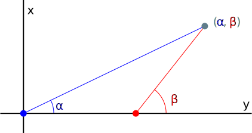

Rectangular coordinates consist of two distances (x, y), and polar coordinates consist of a distance and an angle (r, θ). Perhaps there could be a coordinate system consisting of two angles (α, β):
There are two arbitrarily chosen points: the origin, which is (0, 0) in rectangular coordinates, and the ascended origin, which I arbitrarily choose to be (1, 0). The axis that the origin and ascended origin are on is the cool axis (or x-axis in this case). A point (α, β) is the intersection between a line that forms the angle α with the cool axis from the origin and a line that forms the angle β with the cool axis from the ascended origin.
For example, the triangulated point (45°, 90°) would be (1, 1) in rectangular, and (5, 4) in rectangular would be (tan−10.8, 45°).
Like polar coordinates, there are many ways to state a point. (45°, 90°) can also be (225°, 90°), (-135°, 270°), etc.
A limitation of this system is that specific points on the cool axis can't be expressed; maybe a third, noncollinear origin and angle could be used. For this reason, neither α nor β can be kπ, where k is an integer (e.g. 0, π, etc.).
Graphs can be made with triangulated coordinates as well:
...I think?